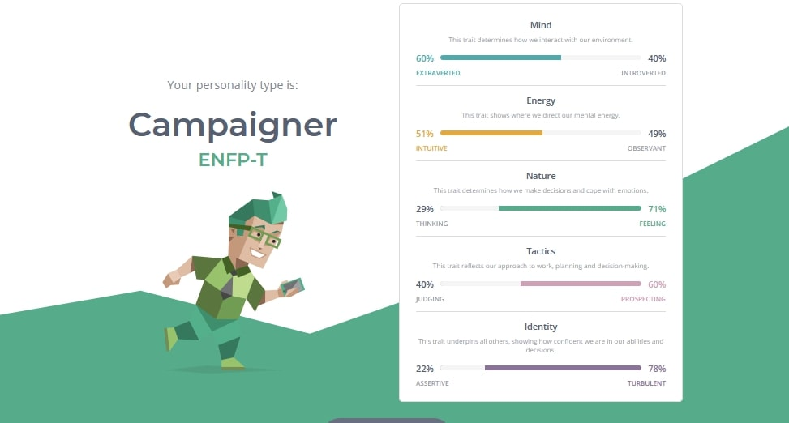
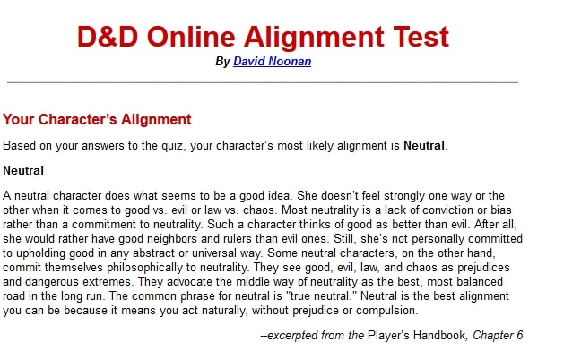
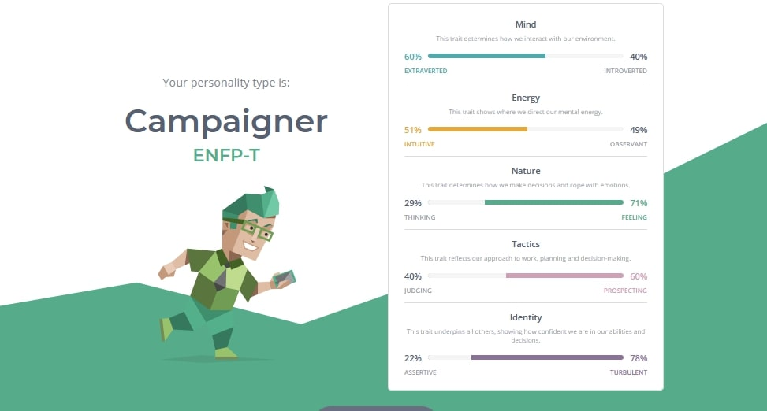
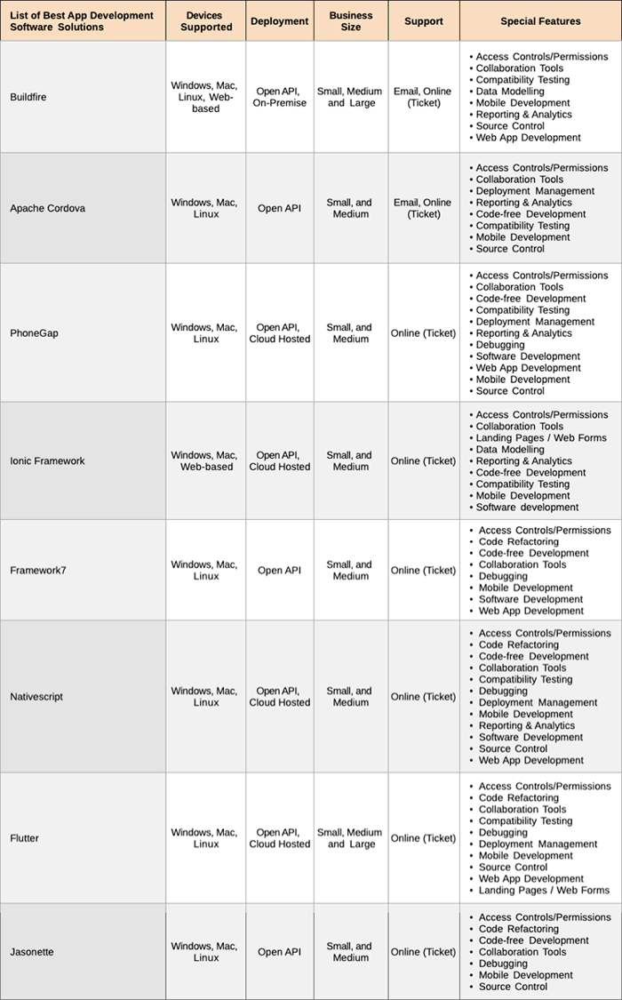

Name: Callum O’Mara
Student number: S3913557
student email address: S3913557@student.rmit.edu.au
Hi I am Callum, an Irish man living abroad moved here about 10 years and went to Kenmore State high school,
able to speak some Gaelic but not a lot, I am able to dislocate my kneecap anytime I want,
my favourite past time is hanging with a few mates at a bar
The part of IT that interest me is vast it is an area of study yet have many niches from tech support to network engineers. My interest began when I was a kid around 7 or 8 and one of my friends had a game shark for GBA and had every Pokémon shiny he claimed to have caught them all but when I found out what he used it made me want to know how to do it myself. I do not really have much experience in IT I use messed around with python a bit fun for time to time but fell out of passion when I moved to Australia. I choose to go to RMIT from open University had a look around and say F it is time to reignite the spark of passion. I cannot wait to learn how to code, become proficient in problem solving and commuting with a team.

Penetration Tester
This job appeals to me for the many reasons the challenge, job security and they force on a safe work environment they seem to really care for
their workers with health care for you and all your immediate family, wellbeing support, discounts on so much and they give you stocks in the company.
For this role at Rio Tinto, I would need a lot of experience in the field or similar area is in both a professional and practitioner way, be
proficient with one or more programming language. Being able to coordinate and communicate are two of the most important skills needed so you
can collaborate with other teams and explain to your clients what is wrong with their security and how to fix it.
Love working in a team you get a better idea, and it improves everyone involved, teamwork makes the dream work, my verbal communication is very
good but being dyslexic, my written communication needs a bit of work.
This job is at a higher level of skill then ill be at after my bachelor, but it is a good job goal. To get to the level need for this job ill
start with doing a course in cyber security followed by starting a junior position and work on getting my certs needed.
captured from My Learning style

captured from My Alinement

captured from ENFP
The results of the test show that I’m good at working as a team, always open to new ideas and pay attention to my team how they’re doing and always keep tabs on every part of the project, so we don’t fall behind. The biggest flaws are I’m a overthink, get stressed easily and can find it had to sit down and focus on a single task for a long without getting distracted. It means the best way for me to study and learn is watching tutorials and step by steps with visual ad and they best way for me to take notes is key bullet points that can be put on queue cards to help memorizes. I chose to do an alignment chart as my third test seem like a good choice since there are many different option you can get. Being neutral means, I have no real bias towards anything and can see both sides to any story
This project will be an app that helps people find and hang with people they met and got along with at festivals and doofs
where there is not any phone signal and to help friends and such find each other camp sites and each other on the festival grounds.
It will also keep a log of the photos you took there, a map of the festival ground, timetable for shows/acts while aiming to use the
littlest amount of battery power so that you will not need to worry about draining your phone too much. Maybe add a feather where you
can collect like a digital badges/patch of the festival.
I came up with this idea because the last few festivals I have been to its takes most of the first day finding your friends you already
planned on meet up with and you do not even know if they will be at their camp when you get there. The last time I went to a festival
I met a group of people who said come back to their camp and have some drinks,
but I lost them and could not find them til the last day. So, I am hoping by making this app it stream lines the searching so people
can spend more time partying and having fun.
the main feature is to find each other I am thinking this could be done by Bluetooth, Bluetooth’s average range is around 10m, but it
should be higher due to there would be less interferants from other signal. You would set a marker on the map of your camp with some details
that you write in how many people are at your camp, if you have room at your camp for more people, what supplies you have, etc. These are just
examples of some you can fill in. The map I am thinking two options like a dynamic and a basic, dynamic would have all the details of the area
and what is going on and tell you stuff with out having to go to a separate tab on the app like who is playing now and who is playing next and at what time.
The basic would just the essential details, the map would be simple, and colour coded to show the different areas you would still see the marker of your camp
and your friends camp but not much more. the main way info will be stored will be local you would get all the event info and maps before you arrive at the festival
and could view it offline all the edits and stuff you add would be stored local and would be shared with people through Bluetooth file sharing. The photo aspect would
work kind of like snapchat how and photos you take is stored on the app and can be added to your phone gallery by exporting it, I am thinking simple filters might be
nice as well something that can add flair if you want too.
The Badge / patch idea I am thinking of is a scout design a hand stitched sort of look and would act as folders showing all the detail of the
festival where you stayed who you meet and the photos you took of the event. Another aspect I was thinking about would be the event manager
side of thing letting them add the maps, areas of everything, time table for every active and act happing and if there support and integration is
there the info desk could have a kiosk where you could put your info so when your friends arrive they can go up and use an id code that would be on
your profile too get your info of where you are camping. They could also be event notification like if a show is going to be later or if the toilets
are out of order, user’s comments could be an option talking about where they were staying like “this camp site gets really cold at night” but I would
have to think about adding this feature due to do not know what people would add, might have a comment review function. The simple way
I am thinking the app would save battery life would be a) the basic map and feature and b) a diming timer you can set.
I used this table

open source tools
I think Nativescript or Flutter would be best Nativescript would be easier too use and has great user features but it since it has code free development doesn’t feel
appropriate to use so I’m going to have to go with Flutter it doesn’t have as many feature but has great customisation option.
The skills ill need to get better at is HTML5 coding, app deployment and flutter all these I can get better at them through tutorials found through RMIT and the web.
With how easy it to access the tutorials I think it would be very feasible to acquire the skills need to make this app.
If this app works, it will improve the whole festival experience by giving people more time with their friends and help them make new ones. It will also help event goers
keep informed with what is happening with the event itself so they can schedule their time better. Event organiser will also have an easier time managing the event and making announcements.
If the user comment does get implemented can warn/ advise users of what they will need to bring and the best places to camp.